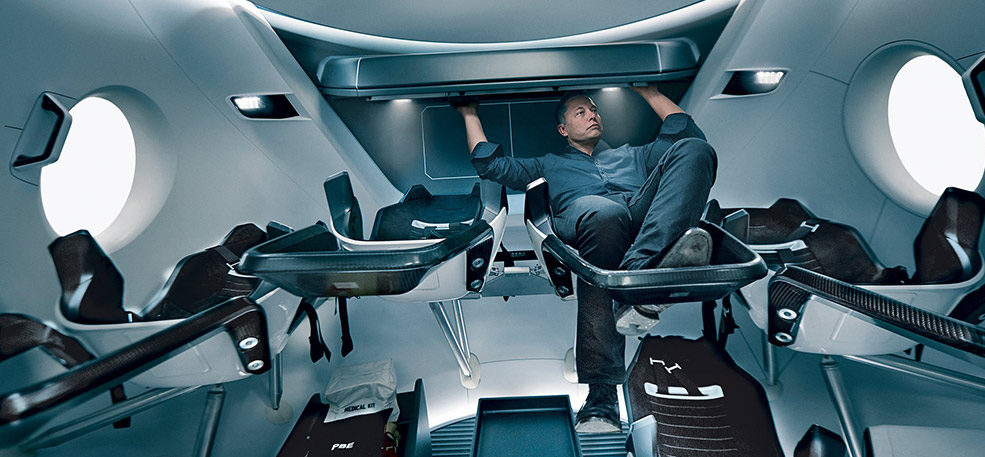

- 4 четвертая планета по удаленности от Солнца
- 7 седьмая по размерам планета Солнечной системы
- 10,7% массы Земли (ваш вес будет в 3 раза меньше, чем на Земле)
- 2 спутника вместо луны (как картошка, только больше)
- 21 км высота самой высокой горы Марса
- +20 максимальная температура на поверхности
Марс. Вспомнить все
Что такое Марс?
Планета солнечной системы названа в честь Марса - древнеримского бога войны. Иногда Марс называют "красной планетой" из-за красного оттенка поверхности, придаваемого ей оксидом железа. Особенности планеты - наличие слабой атмосферы, состоящей в основном из углекислого газа, времена года, пылевые бури, сильная эррозия почв.Где это? Как туда доехать?
Расстояние до Марса - почти 56 миллионов километров. Чтобы преодолеть такое расстояние, нужно лететь на межпланетном корабле 7-8 месяцев.От идеи до реализации
Илон Маск. Гений или безумец?
Канадо-американский инженер, предпрениматель, изобретатель и инвестор; миллиардер. Основатель компаний SpaceX и X.com, позже переименнованной в PayPal. Планирует потратить большую часть накоплений на реализацию своей мечты, а также мечты многих тысяч романтиков, писателей, ученых: создать внеземную цивилизацию." Мы должны сделать эту мечту реальностью за наше время жизни. Любой человек, который пожелает отправиться на Марс, должен иметь такую возможность- заявил Маск на Международной астронавтической конференции в Гвадалахаре(Мексика). Он обосновал необходимость своего проекта вопросом выживания человечества, которое для своего сохранения должно стать "космическим видом". Илон поставил перед собой цель: сократить стоимость вывода кораблей в космос в 10 раз, что станет первым шагом для человечества в освоении Марса.
Стоимость перелета
Высадка двоих астронавтов на Луну обошлась США в 20 млрд. долларов.
Маск стремится сократить эту цифру в 20000 раз, что составит 500 000 долларов на человека.
$500 k и ты на Марсе! Я готов лететь!
Подводные камни в масштабах космоса
-
Жить или выживать?
Чем отличаются Земля и Марс? Какие условия встретят новых поселенцев? Марс холодная и засушливая планета, на которой естьсвоя атмосфера, на 95% состоящая из углекислых газов, а минимальная температура опускается до -140 градусов по Цельсию. Каждый год по весне на планете случаются пылевые бури, длящиеся от нескольких часов до нескольких месяцев. На планете отсутствует магнитное поле, поэтому радиационный фон повышен. А низкая гравитация при длительном пребывании на Марсе сделает возвращение на Землю невозможным. Полет на Марс - билет в один конец с целью создать новую цивилизацию.
-
Готовы ли технологии?
????
-
Путешествие на грани фантастики
!!!!
-
Жизнь на Марсе
))))
Организация жизни в колонии
-

Проживание
В основе жилых помещений лежат надувные компоненты - спальня, рабочая зона, гостинная, парник для выращивания зелени - 50м2 на человека. Благодаря этим компонентам, колонисты смогут принять душ, приготовить свежую пищу, носить обычную одежду. Весь комплекс соединен сетью ходов.
Подробнее -
Строительство
!!!!
Подробнее -
Исследования
???
Подробнее -
Фото
########
Подробнее -
Растения
$$$$$$$$$$
Подробнее